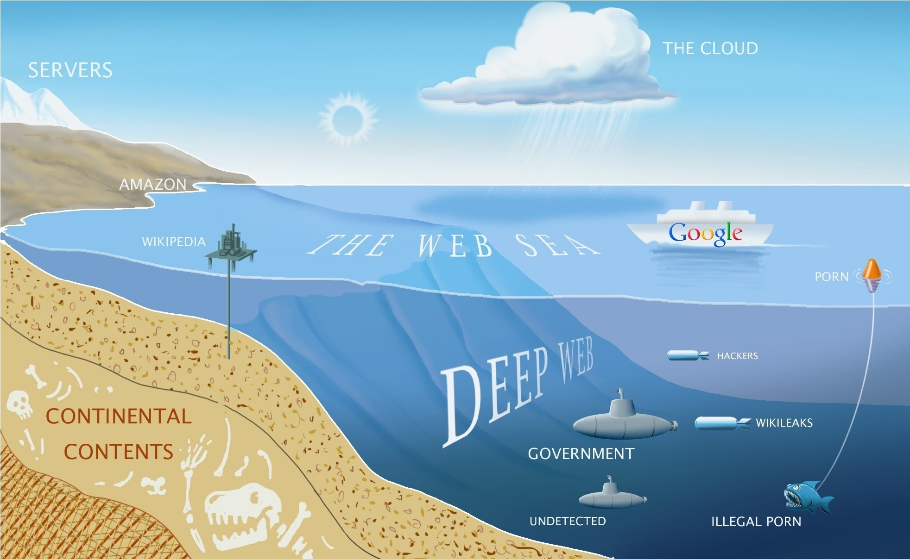

1. DARK Web is also known as the Invisible web which you cannot access directly from your regular browser.

2. The dark web is said to constitute over 80% of the entire Internet.
3. It is famous for Illegal Marketplaces where users can buy or Sell Drugs, Weapons, Fake passports, Fake ID cards, Dead Animal valuables like croc skin, rhyno horns, Elephant tusks. Bitcoins or other Cryptocurrencies are used as a mode of payment on Dark Web.
4. There are sites on where one can hire HITMAN to get someone kidnapped or killed.
5. Child Pornography is a part of Deep and dark Web.
6. You are never safe on the Deep or dark web, it is always advised to use VPN and other techniques to avoid revealing your IP addresses.
7. Leaked Federal Documents, Government secrets, Banned materials, and all sorts of leaks are openly sold over Dark Web. It May be possible JIO database is being sold now.
8. Match Fixing sites can be found on it.
9. Live Human Experiments. There are live stream sites where a user can ask for human experiments. Many people are addicted to this cruel shit and they pay for it. Some common examples are, a man in a mask has some person tied up and the user can chat and ask that masked guy to cut, smash, or kill the person live.
10. Dark web websites do not end with regular extensions. They usually end with .onion. Most of the domains are not static, also the domains are encrypted to make it difficult for search engines to index it.
One of the example of a Deep Web site is 3g2upl4pq6kufc4m.onion , you cannot access the contents of this site with normal browser like Google, Firefox, Bing etc. Tor Browser can be used to access it.
11. Every Movie, software, etc can be also found on it.
12. Most of the links of dark web sites change frequently, so its not easy to explore around it. Deep Web Wiki can be found on Google where you can get links to various sites. People have had very serious and bad experiences on the Dark web and you can read or watch them on YouTube. There are certain channels on YouTube where people show dark web websites and creepy stuff.
13. Numerous good things the dark Web promotes as it was built upon on such as protest groups, a safe form of communication for freedom fighter cells. Also the fact that it was built for military purposes. There is a Facebook, an eBay and even a Gmail on the dark Web, all of which are used by normal human beings who don't like being tracked to a point of insanity by the people they elected to "protect" them and their privacy.
Again, I advise you not to mess with all this as you may end up in a Prison.